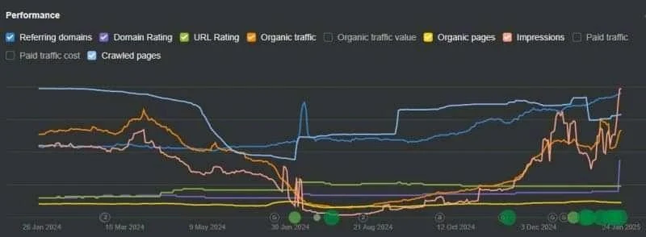
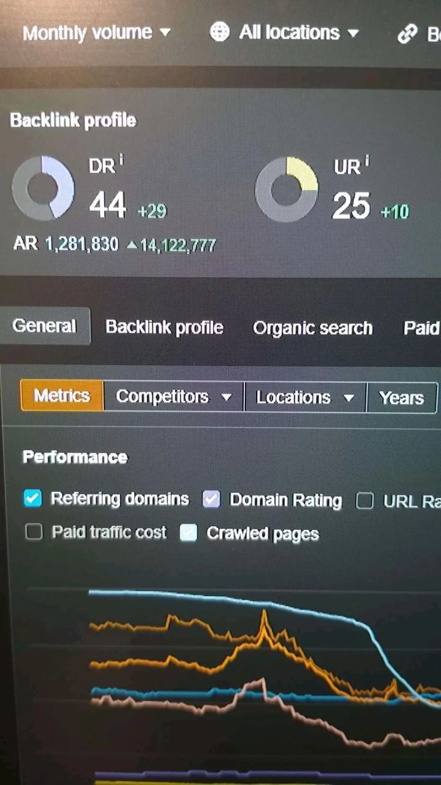
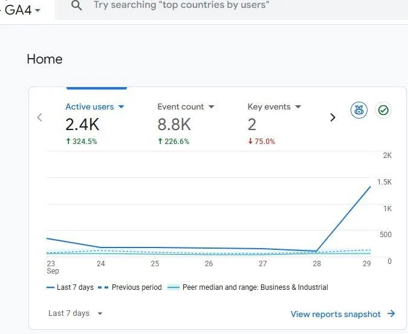
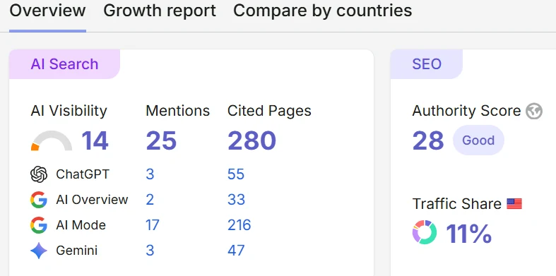

I am — the SEO strategist
I turn search problems into growth systems.
I help B2B SaaS and multi-location businesses find and remove the constraints holding back organic growth—from technical SEO and content strategy to authority building, local search, and AI-search visibility.
Technical SEO · Content Strategy · Authority Building · Local SEO · AI-Search Visibility
01 / RESULTS
Results, not SEO theater.
I measure the work by what changes—not by how many keywords fit into a monthly report.
Metrics shown from selected client engagements. Client identities are withheld by agreement.
02 / TWO BUSINESS MODELS
Two SEO systems.
SEO isn't one universal checklist.
The right strategy depends on how customers discover, evaluate, and buy from you.
B2B SaaS SEO & AI search
For SaaS companies that need qualified organic demand—not traffic for traffic's sake.
I build search systems around the topics, problems, entities, and commercial journeys that matter to the business.
That includes traditional SEO alongside AEO and GEO principles where they make sense—particularly when content needs to answer questions clearly, establish topical relevance, and become easier for search and AI systems to understand, retrieve, and cite.
What I work on
- Technical SEO and indexing
- Information architecture and internal linking
- Topic and content strategy
- Commercial and informational search intent
- Entity and topical optimization
- Content strategy for search and AI-generated answers
- AEO and answer-focused content
- GEO and generative search optimization
- Digital PR and authority building
- AI-search visibility measurement
- Page-level growth analysis
The goal: turn organic search into a repeatable source of qualified demand while building visibility across the search experiences your customers use.
Explore SaaS SEO ↓Multi-location local SEO
For businesses where customers search by service, location, and intent.
I connect location pages, site architecture, Google Business Profiles, structured data, citations, internal linking, and authority into one local search system.
As search becomes more conversational and AI-driven, the fundamentals still matter: accurate business information, useful location content, clear entities, strong architecture, and consistent signals across the web.
What I work on
- Local intent and competitor research
- Service × location mapping
- Location-page architecture
- Google Business Profile optimization
- Local schema
- Citation foundations
- Internal linking between services and locations
- Local authority building
- Entity and location relationships
- Migration and redesign recovery
The goal: make every important location easier to discover, understand, and trust.
Explore Local SEO ↓03 / SELECTED RESULTS
Proof before promises.
Here are two examples of the problems I solve. Client identities are withheld where required, but the work and measurement are shown openly.
01 / ORGANIC RECOVERY
Recovering search visibility after a site revamp.
A redesign had damaged hard-earned organic performance.
The problem wasn't simply “more content.” The site's search foundations needed to be rebuilt.
What I changed
- Reworked local search architecture
- Mapped pages to local search intent
- Improved indexing and crawlability
- Strengthened internal site structure
- Implemented structured data
- Rebuilt citation foundations
- Developed an authority-building strategy
Result
DR 44Domain Rating reached
+29Recorded DR increase
Aug–JanVisible recovery window
Multi-locationLocal search model
Client identity withheld by agreement


02 / B2B SAAS + AI SEARCH
Building content that earns visibility in search—and citations in AI answers.
The objective wasn't simply to publish more articles.
I built content around answerable entities, real user intent, commercially relevant topics, and source-worthy information.
The work combined traditional SEO with AEO and GEO principles where relevant, with a focus on making important information easier for search engines and AI systems to discover, understand, retrieve, and cite.
What I changed
- Built topic and entity relationships
- Identified high-value search opportunities
- Restructured content around user intent
- Developed answer-ready content
- Strengthened internal linking
- Built authority around important pages
- Improved content for AI retrieval and citation
- Tracked visibility across AI-search experiences
Result
+324.5%Active-user growth
25Tracked AI-search mentions
280Pages cited by AI platforms
11%AI-search traffic share
AI-search measurements are based on a defined set of tracked prompts and observed citations during the measurement period. Client identity withheld by agreement.


04 / HOW I WORK
Diagnose. Prioritize. Execute. Prove.
No disconnected SEO checklist.
Every engagement starts with evidence and ends with a clear understanding of what changed and what should happen next.
Find the constraint
I investigate technical health, organic visibility, search intent, competitors, content, authority, entities, and AI-search presence.
What's actually limiting growth?
Sequence the work
I turn the findings into a roadmap based on expected impact, effort, dependencies, and business value.
What should we fix first?
Make the changes
I work across technical SEO, content, internal architecture, local search, and authority—and use AEO or GEO principles where the opportunity calls for them.
What needs to change?
Read the signals
I track the signals that matter and explain what they mean: visibility, qualified traffic, conversions, AI mentions, citations, and other search-specific indicators.
What changed—and where is the next constraint?
05 / ABOUT
SEO with an engineering mindset.
I'm Shair Ali.
My route into SEO took the scenic way: software engineering taught me how websites break, content writing taught me what people actually want to read, and off-page SEO taught me that “just publish great content” is not a distribution strategy.
Today, I bring all three together.
I work across technical SEO, content, authority, local search, and AI-search visibility.
I can look at a technical problem and understand the system behind it. I can look at a search query and understand the intent behind it. And I can look at a page and ask not only whether it can rank, but whether it deserves to be found, understood, linked to, or cited.
I specialize in B2B SaaS SEO, multi-location SEO, AEO, GEO, and AI-search visibility.
Software engineeringBS in Computer Software Engineering · University of Sindh
My technical foundation helps me understand websites, systems, implementation constraints, crawling, indexing, and how search engines interact with web pages.
My technical foundation helps me understand websites, systems, implementation constraints, crawling, indexing, and how search engines interact with web pages.
ContentSEO writing → content strategy
I started by creating content, which taught me that rankings aren't the objective. Content has to satisfy the reason someone searched in the first place.
I started by creating content, which taught me that rankings aren't the objective. Content has to satisfy the reason someone searched in the first place.
AuthorityOutreach · Digital PR · Link acquisition
I have hands-on experience building and qualifying backlinks, managing anchor text, and developing authority around pages that need to compete.
I have hands-on experience building and qualifying backlinks, managing anchor text, and developing authority around pages that need to compete.
AI searchSEO → AEO / GEO
SEO remains the foundation. I use AEO and GEO principles where they make sense—particularly for answer-focused content, entity relationships, citation opportunities, and AI-search visibility.
SEO remains the foundation. I use AEO and GEO principles where they make sense—particularly for answer-focused content, entity relationships, citation opportunities, and AI-search visibility.
WHAT I USE
Tools are useful. Knowing what to investigate is more useful.
I use these tools as part of my SEO workflow.
AhrefsSemrushGoogle Search ConsoleGA4Screaming FrogMozGumshoeWordPress
06 / FREQUENTLY ASKED QUESTIONS
The useful answers.
What modern SEO covers, where AEO and GEO fit, and how I approach the work.
What is SEO?
SEO, or search engine optimization, is the process of improving a website's ability to be discovered, understood, and surfaced in relevant organic search results.
I approach SEO across four connected areas: technical foundations, content and search intent, authority, and search visibility.
The objective isn't simply more traffic. It's attracting the right searches and turning organic visibility into meaningful business outcomes.
What does an SEO strategist do?
I investigate how a business currently performs in search, identify the constraints limiting growth, and build a prioritized strategy around the highest-value opportunities.
That can involve technical SEO, content strategy, information architecture, internal linking, local SEO, authority building, competitor research, and AI-search visibility.
The strategy depends on the business model rather than following the same checklist for every website.
What SEO services do you provide?
My SEO work can include:
- Technical SEO audits and strategy
- SEO content strategy
- Keyword and search-intent research
- Information architecture and internal linking
- On-page SEO
- Local and multi-location SEO
- Authority building, link acquisition, and digital PR
- SEO migration and redesign recovery
- AEO and GEO strategy where relevant
- AI-search visibility analysis
- SEO performance measurement
The exact scope depends on the site's problems, business model, and growth objectives.
Do you work with B2B SaaS companies?
Yes. I work with B2B SaaS companies that need organic search to contribute to qualified demand, product discovery, and long-term growth.
That can involve technical SEO, topic strategy, content architecture, authority building, commercial-intent optimization, and AI-search visibility.
Do you provide local SEO?
Yes. I work with multi-location businesses where search visibility depends on the relationship between services, locations, websites, Google Business Profiles, structured data, citations, internal linking, and authority.
I can also work on recovery when a migration, redesign, or structural change has damaged organic visibility.
What is AEO?
AEO, or Answer Engine Optimization, focuses on making information easier for answer engines and AI systems to understand, retrieve, and potentially cite when responding to relevant questions.
I treat AEO as part of a broader SEO strategy rather than a replacement for SEO.
What is GEO?
GEO, or Generative Engine Optimization, refers to optimizing content and broader search signals for generative and AI-powered search experiences.
In my work, GEO can involve content structure, entities, topical coverage, authority, source quality, citations, and measuring how a brand appears across relevant AI-search experiences.
How is AEO different from SEO?
SEO focuses on earning visibility across search engines and organic search results.
AEO applies many of the same foundations to answer-oriented experiences, with greater attention to questions, direct answers, retrieval, and citations.
There is substantial overlap between the two, which is why I treat AEO as part of modern SEO rather than a completely separate discipline.
How do you approach AI-search visibility?
I look at how a brand and its content appear across relevant AI-search experiences. Depending on the engagement, that can include tracking:
- Brand mentions
- Cited pages
- Referenced sources
- Relevant prompts and queries
- AI-search traffic where measurable
- Changes in visibility over time
The goal is to understand what is being surfaced, why it may be getting surfaced, and where there are opportunities to improve.
Can SEO help my website rank higher on Google?
SEO can improve a website's ability to be crawled, understood, and considered for relevant organic search results, but no legitimate SEO strategist can guarantee a particular ranking.
The work is about improving the underlying conditions that support search visibility while aligning the site with user intent and business goals.
How long does SEO take to work?
There isn't one reliable timeline for every website.
The timeframe depends on factors such as the site's existing authority, technical condition, competition, content quality, search demand, industry, and the amount of work that can be implemented.
I focus first on identifying the constraints and opportunities so that the work can be prioritized around what is most likely to matter.
Do you guarantee SEO results?
No. I don't believe in guaranteed rankings or artificial promises.
I prefer to show the work, establish measurable objectives, explain what changed, and report the evidence honestly.
Do you only provide SEO recommendations?
No. Depending on the engagement, I can work across strategy, content, technical SEO, local search, authority building, and measurement.
The objective is implementation—not a strategy document that disappears into Google Drive.
How do you measure SEO success?
The metrics depend on the business and the objective. I may look at:
- Organic visibility and qualified organic traffic
- Search demand captured
- Rankings for strategically important queries
- Conversions, leads, and revenue where attribution is reliable
- Backlink and authority growth
- Local visibility
- AI-search mentions, citations, and traffic where measurable
I care more about whether the right business outcomes are improving than whether a report contains an impressive number of keywords.
Who do you work with?
I primarily work with B2B SaaS and multi-location businesses where organic search is commercially important and there is enough product, market, service, or location depth to build a meaningful search strategy.
I work with teams globally from Pakistan.
Do you work with businesses outside Pakistan?
Yes. I'm based in Pakistan and work with B2B teams globally.
The work is delivered remotely, with strategy and execution adapted to the client's market, audience, search landscape, and business model.